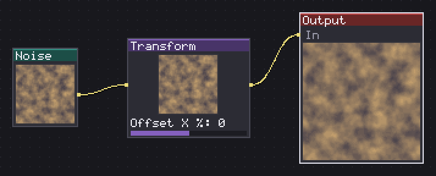
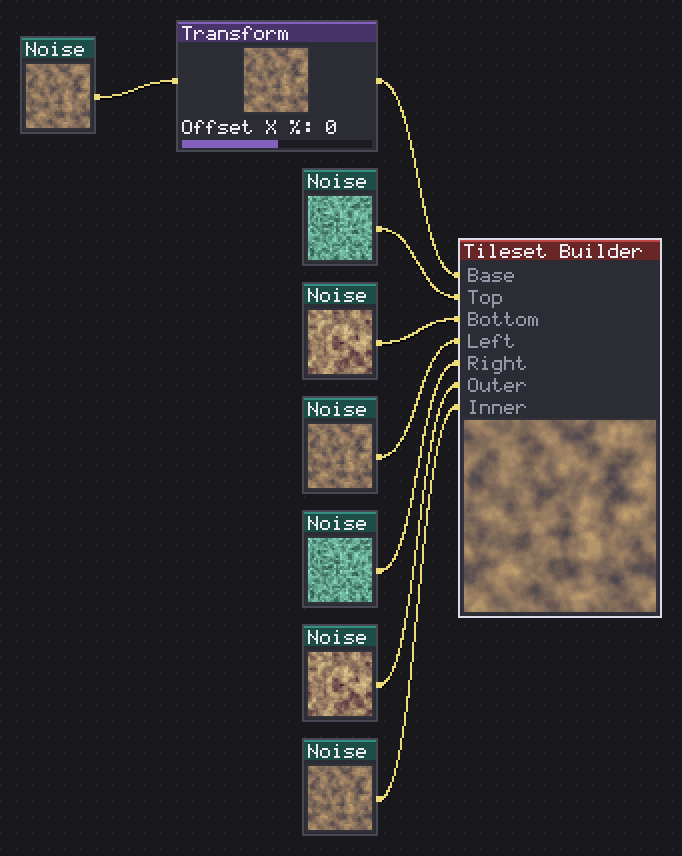
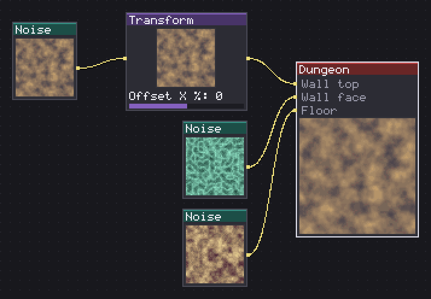
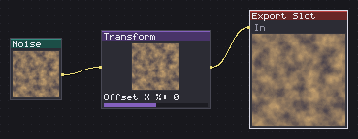
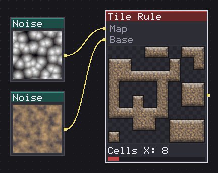

Output closes a graph, and everything else in this category is a specialised terminal that reads the graph the same way: Autotile and Tileset Builder turn one tile into a whole self-connecting sheet, Dungeon builds a wall as volume rather than a flat tile, and Export Slot tags a branch so any of the three sheet builders knows which texture is which. Tile Rule sits apart from the other four, since it is not a terminal at all, it resolves a hand drawn map into the right tile from a sheet, and its output feeds back into the graph rather than ending it.
All of the sheet builders share the same two templates, Wang 16, edges only, and Blob 47, edges and corners, 47 variants, and the same border treatment knobs, so switching from Autotile to Tileset Builder halfway through a graph does not mean relearning a new set of sliders.

Closes the graph: whatever arrives here is the result you see.
Output closes the graph: whatever arrives on its one input is the result you see on the canvas and the result any export reads. It has no parameters at all, since its only job is to mark the end of the chain.
Every graph needs exactly one to produce anything, though the editor tolerates more than one loose Output sitting around unconnected while you work. When a graph also carries an Autotile, Tileset Builder or Dungeon node, Output still matters: it is the fallback base texture for the sheet builders when no Export Slot has claimed that role, which is what lets the plain case, one Output and no slots at all, still export a full tileset sheet with no extra wiring.
There is nothing to configure and nothing to get wrong here beyond plugging the right branch into it, which is the point: everything interesting in a Spaghetti graph happens upstream, and Output is where it stops happening.
In: In (image) · Out: -
Cuts a base texture into the pieces of a self-connecting tileset.
Autotile cuts one base texture into the pieces of a self-connecting tileset by synthesising the border, rather than compositing pieces you draw yourself, that is Tileset Builder's job instead. Tileset picks the layout: Wang 16, edges only, a 4x4 sheet, or Blob 47, edges and corners, 47 variants on an 8x6 sheet with one empty cell, the same 47-variant set Godot, Tiled and RPG Maker all use.
Top light, Side shade and Bottom shade are the shading that actually makes the cut pieces read as a volume instead of the same texture with chunks removed: with all three at 0, the sheet is honest about what it is doing, one tile with parts cut away, which is exactly what a real tileset is not. Edge band sets how many pixels deep that shading reaches from each open edge.
Inset pulls the border in from a side with no neighbour, 0 for tiles meant to butt up edge to edge like a platform block. Outline with Outline color adds a rim around the whole cut shape, and Corner radius rounds it. Feed extra textures through Export Slot nodes, role Top, Sides, Bottom or the wildcard Edge, so a side gets its own art instead of a shaded copy of the base.
In: Base (image) · Out: -
Parameters

Composes a tileset from the edge pieces you draw one by one.
Tileset Builder composes a tileset from the pieces you draw and wire in yourself, with zero synthesis: nothing here invents a pixel the way Autotile's shading does. The Base input is the only required one; Top, Bottom, Left, Right, Outer and Inner are the edge and corner pieces, each a full tile whose alpha is read as its own silhouette, which is how a grass tuft or a rock overhang gets into the sheet, a shape no shading model could invent.
The two corner inputs read by quadrant: draw the Outer piece as one loose island shape and its four corners land in the sheet's four convex corners; leave it unwired and the two adjacent edge pieces overlap instead, the plain composite result. Inner works the same way for concave corners.
Base cutoff shaves the base back on open sides so it cannot peek out from under a piece that does not fully cover its tile, and Corner radius rounds the whole composed tile with the same fillet Autotile uses, so a project mixing both nodes rounds identically. Tileset picks Wang 16 or Blob 47 exactly as on Autotile.
In: Base (image), Top (image), Bottom (image), Left (image), Right (image), Outer (image), Inner (image) · Out: -
Parameters

Builds a dungeon tileset with floor, wall face and capping.
Dungeon builds a wall as a volume rather than a flat tile, the RPG Maker A4 model: a wall is a cap seen from above plus a front face plus a floor, not one rectangle repeated. The Wall top input is required, an ordinary Blob 47 cap, 47 variants; Wall face and Floor are optional.
Without a Wall face, the node derives one from the top automatically, darkened along a vertical ramp from 45% at the top edge to full brightness at the base, never fully dark at the top or the face reads as a hole rather than a wall. That is what lets a whole dungeon tileset come out of a single tile, the same trick Autotile plays with its own shading.
Wall height % is the face's height as a percentage of the tile, not a pixel count, since a pixel number would not survive a project-wide resolution multiplier the way a percentage does. 50 gives a low wall; the exported sidecar records the actual pixel height a game engine needs. Inset, Corner radius, Outline and the three shade sliders, Top light, Side shade, Bottom shade, work the same as on Autotile, since the cap section is built the same way.
In: Wall top (image), Wall face (image), Floor (image) · Out: -
Parameters

Tags a branch with a role so the tileset exporter reads it.
Export Slot tags a branch of the graph with a role so the tileset exporter, Autotile, Tileset Builder or Dungeon, knows which texture is which without needing a fixed number of input sockets on those nodes themselves. Role picks Base, Edge, Top, Sides or Bottom.
Drop several of these around a graph, one per texture that a tileset needs beyond the plain base, wire each one to whatever branch produces that texture, and the sheet builder downstream picks them up automatically, no need to route every texture into one node's input list by hand. Two slots claiming the same role is not an error, only a note in the panel; the older one, created first, wins, which mostly matters if a slot gets duplicated by accident while editing.
It evaluates as a plain passthrough, so it has its own thumbnail on the canvas like any other node and does not need special handling to preview: what actually reads the tagged role is the exporter, not this node's own output. Skip it entirely on a simple graph, base falls back to the graph's own Output when no slot claims that role, and only add slots once a wall or a floor genuinely needs its own separate texture.
In: In (image) · Out: -
Parameters

Resolves each map cell by its neighbors and paints the tile that fits.
Tile Rule resolves a black and white map into the tile that fits each cell by its neighbours, and unlike the other five nodes in this category it is not a terminal at all: its output is a plain image that can keep feeding the rest of the graph. The map input is read as solid wherever it is light, over half luminance, and open elsewhere; the base input is the tile that gets cut into the same self-connecting pieces Autotile would build from it.
Cells X and Cells Y (0=X) set how many rows and columns of the map to resolve; leave Cells Y at 0 to match Cells X for a square grid. Map wraps (tiles) treats the map itself as a torus for the neighbour lookup, worth turning on when the map is meant to be a repeating tile rather than a bounded level.
Tileset picks Wang 16 or Blob 47, same as the other tileset nodes, and with no base wired the result still shows the resolved map as flat grey cells, useful for checking the neighbour logic before committing a texture to it. I use this to preview how a hand painted map of a dungeon or a cave will actually autotile before exporting the real sheet.
In: Map (image), Base (image) · Out: image
Parameters